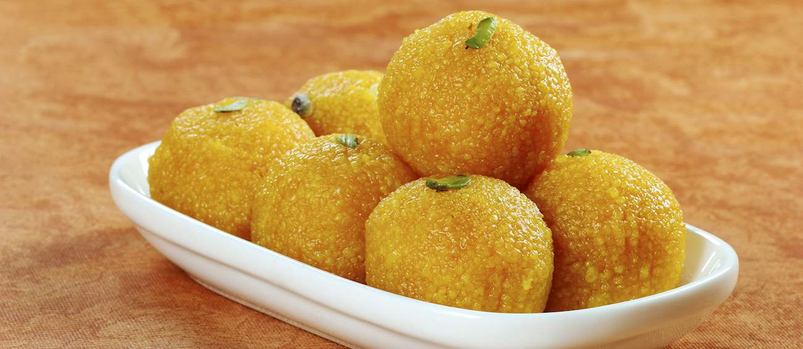

Dal Makhani
Although it originated in Punjab, dal makhani has become one of the most popular Indian lentil dishes, both in the country and outside of its borders. It consists of red kidney beans and whole black lentils, which also go under the name urad. The dish is prepared with hefty amounts of ghee and various seasonings such as ginger garlic paste and chili, and it is slowly cooked in a rich, tomato-based sauce. The name makhani, meaning butter, stems from the last addition, a drizzle of melted ghee or butter that provides the typical velvety flavor of this classic.
Laddu
This traditional Indian dessert is made with different types of flour that are mixed with sugar and shortening, then shaped into balls. Like many other dishes in India, laddu appears in numerous varieties and is created with a myriad of different ingredients. Tiny laddu balls can be made with various types of legume flour, most commonly chickpea flour, wheat flour, and even coconut flakes. Dried fruits or nuts are often incorporated to provide sweetness and modify the flavor. This old Indian confectionery was primarily created with flour and jaggery.
Masala Dosa

A traditional southern Indian dish known as masala dosa is popular throughout the country, made from a batter of soaked rice and lentils that is baked into a thin pancake and usually stuffed with potatoes, onions, and mustard seeds. The dish is often garnished with grated coconut and chopped coriander. With its huge popularity, there are also some variations of the dish, such as mysore masala dosa, rava masala dosa, onion masala dosa, and paper masala dosa. It is usually consumed as a quick snack or as a part of any meal of the day.
Palak Paneer

Palak paneer is a popular Indian vegetarian dish made with paneer cheese in a rich, thick sauce consisting of puréed spinach mixed with tomatoes, garam masala, garlic, and numerous spices. The key ingredients are even mentioned in the name of the dish, since palak means spinach in hindi, and paneer refers to the cheese. Palak paneer has roots in the Punjabi region, but there are also other variations of the dish throughout India. It is a highly nutritious meal that can be consumed either for breakfast, lunch, or dinner, accompanied by rice or Indian flatbreads such as naan and roti.
Pav Bhaji

Pav bhaji is a popular street snack originating from the Indian state of Maharashtra. It consists of a vegetable curry that is typically served with a soft bread roll known as pav. The dish was invented in the 1850s as a midnight meal by street vendors who prepared it with all the leftover vegetables from the day, which were then mashed and combined with spices and ghee butter. Originally, it was a quick and easy meal for Mumbai's textile mill workers, but today it is a favorite street snack that is also served in some restaurants in Mumbai. There are a lot of varieties of the basic pav bhaji, with added cheese, paneer, mushrooms, plantains.
Rasgulla

Rasgulla is a traditional sweet that is usually served at the end of a meal, like many other Indian milk-based desserts. It is prepared from chhena paneer dumplings and semolina dough, cooked together in a sugary syrup. The origin of rasgulla is the subject of a heated debate, with West Bengal and Odisha both claiming to be the birthplace of the dessert. Bengalis claim that rasgulla was the byproduct of many culinary experiments in the state, while the people of Odisha claim that it was traditionally offered to Lord Jagannath for centuries. However, most food historians agree that the truth is somewhere in between.